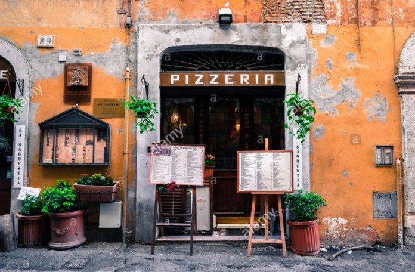

Overview
Purpose
Serves delicious pizza and more to satisfy your cravings. It will surely bring your family together forever.
Audience
Families in the Community
Branding
Website Logo
Style Guide
Color Palette
Palette URL: https://coolors.co/667ccc-b4adff-cbce64-d79070-bc6263c| Primary | Secondary | Accent 1 | Accent 2 |
|---|---|---|---|
| #b4adff | #cbce64 |
Typography
Heading Font: IM Fell
Paragraph Font: French Lato
Normal paragraph example
The best way to keep your family to stay together is to pray and eat together. With the delicious pizza and more to eat together your family will be forever.
Colored paragraph example
Menu varies to the interest and taste of the members of the family. It will surely satisfy their cravings with affordable budget menu of your choice.
Navigation
Site Map
Content
Home page
Pizza was originated from Naples, Italy. It where the famous writer Alexander Dumas once observed that it's all they eat there in the winter! To qualify as a real Napoli pizza, the tomatoes used have to be grown on local volcanic planes. Pizza is Italian for 'pie', but it's unclear exactly where it comes from. It was first recorded as early as 997AD, which means it's been around for a LONG time! Cheese and tomato is the classic Italian way, but over time, people all over the world have added their own favorite toppings and flavors to the dish. In India, paneer cheese is often used, and in Canada people like to pile their toppings as high as possible, while Koreans like to add wasabi and sweet potato to theirs! Billions of pizzas are ordered and eaten every year all over the world - in America over 90% of people have pizza at least once a month, while over 300 slices are consumed every second in the states! American pizza is probably the most famous after Italian pizza - Italian immigrants in the 19th century brought it over, and over time many different styles developed in different parts of the states, including New York Style, Chicago Deep Dish, Detroit Style and New England Greek Style! In the Philippines it was famous that pizza was baked in a gas powered oven on pedicabs and stalls. It became favorite of the Filipinos because they love to eat different flavors specifically to children who loved sauces like catsup and pizza sauce which is the main ingredient of pizza in the Philippines.
Images for the Home page


About Us
Pizzanatics was established by a single parent of 3 children in the time of Pandemic by 2020 in which online delivery is the mode of purchase for goods. Her children love pizza and because it is too expensive to order online she begun baking and made pizza for her children. At first it was not perfect but her children still love it too. She kept on baking until she finally perfected it. Being confident with her craft, she let it to be tasted by her friends and commended it more delicious than the branded one. The dough was so fresh and the toppings too. Her friends encourage her to sell it online and be delivered to the customers by his eldest child to nearby barangays and town. It was successful and so she decided to have a store near their house so she could take care of her children while managing the store. At first she has only one helper that help in reheating the pizza which was personally prepared by her. During that time there are just five menu of pizza she was selling, Hawaiaan, Pepperoni, Bacon and mushroom, Vegetable Garden and Ham and Cheese. The customers were satisfied to the taste of the pizza with its affordable price for a meager family who wants to have snack and celebrate some occasions in their family like birthdays and graduation day.
Images for the Page 2


Pizza and More
At the nearing end of the Pandemics by 2022 in the Philippines, fruit shake, fresh juices, and carbonated drinks were offered since dine in was permitted by the government. To compete with the other food store she added in her menu other pizza recipes, chicken recipes like buffalo wings and other chicken dishes, pasta dishes, sizzling dishes that can be ordered by families who celebrated their occasions inside her dine in store. It is not just the delicious meals served were love by her customers also the friendly accommodating staff who were members of her own and extended family.
Images for the Page 3


Wireframes
Create three wireframes for your site. One for each page and list them here
Home
[Any additional details about home that the wireframe does not make clear]
About Us[
[Any additional details about page 2 that the wireframe does not make clear]
Pizza and More
[Any additional details about page 3 that the wireframe does not make clear]